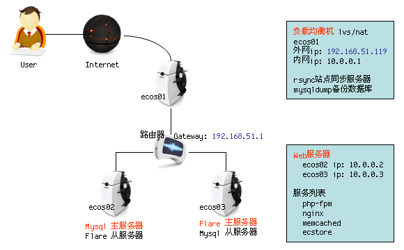

2011年
部署ecstore过程中出现mysql主从同步问题, 花了一天时间解决, 在文档中有注意事项. 再来部署ecstore在同步方法上最终选择使用rsync脚本同步.
一共三台机器, 操作系统为CENTOS 5.5 其中双网卡的机器ecos01(外网ip:192.168.51.119/内网ip:10.0.0.1)作内网跳板机, 也作为负载均衡机.
另外两台机器ecos02(ip:10.0.0.2) ecos03(ip:10.0.0.3)为Web服务器, 当中的ecos02为mysql主服务器 ecos03为flare主服务器.
服务器角色
| 服务名称 | 软件名称 | 机器分配 |
|---|---|---|
| 负载均衡设备 | lvs(vs/nat) | ecos01 |
| php应用服务器 | nginx php fastcgi | ecos02/ecos03 |
| 数据库服务器 | mysql | ecos02主/ecos03从 |
| 缓存服务 | memcached | ecos02/ecos03 |
| 图片存储 / kv存储数据库 | flare | ecos03主/ecos02从 |
| 网站数据同步 | rsync | ecos01 |
| Mysql数据同步 | mysqldump | ecos01 |
